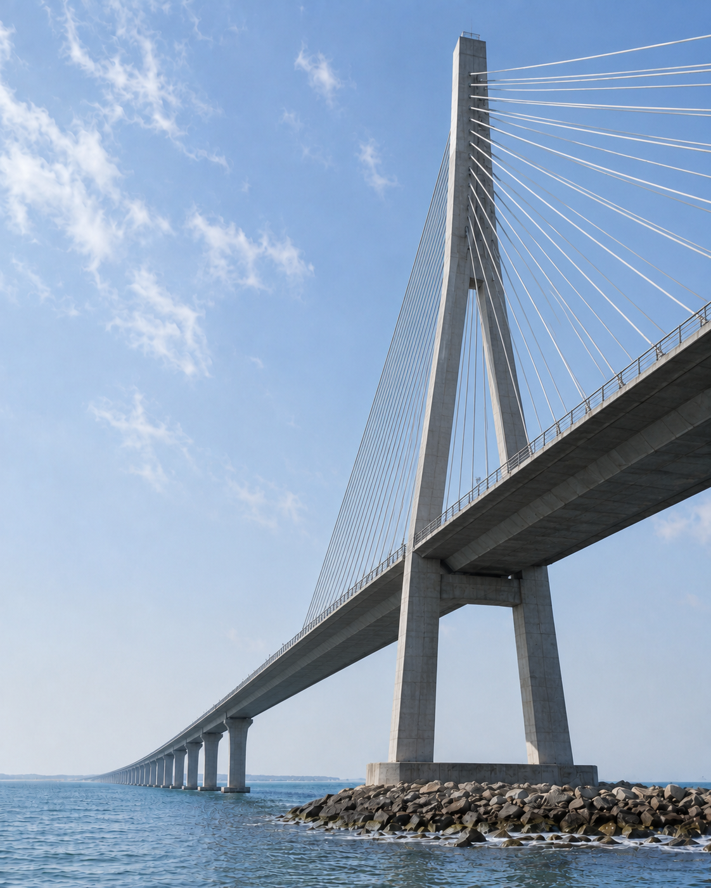

Climate change and extreme events
Wind, hurricanes, heatwaves, wildfire, flooding, sea-level rise, multi-hazard and cascading effects.
Call for Papers
Life-Cycle Performance and
Structural Innovation
Original research and comprehensive reviews are invited on structural systems that can adapt, recover, and remain sustainable under changing climate conditions.

Wind, hurricanes, heatwaves, wildfire, flooding, sea-level rise, multi-hazard and cascading effects.
Non-stationary hazards, reliability, risk-informed assessment, adaptive codes and decision support.
Durability, corrosion, aging, maintenance, low-carbon materials, circular design and resilience-carbon tradeoffs.
Self-centering systems, isolation, adaptive damping, UHPC, FRP, shape memory alloys, mass timber and modular construction.
Large-scale testing, advanced simulation, digital twins, AI-driven analytics and structural health monitoring.
Work that connects climate risk, structural performance, durability and implementable innovation across the service life.
The Hong Kong Polytechnic University
La Rochelle University
The Hong Kong Polytechnic University
University of Central Florida
The QR code opens the official ScienceDirect page directly. Please share this call with colleagues working in related fields.
Promotional page prepared by the Guest Editors. Please refer to ScienceDirect and Editorial Manager for authoritative information.